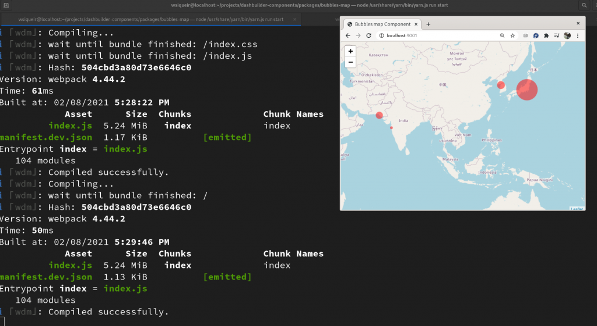

Dashbuilder External Components Javascript API
External Components were introduced in Developing Custom Components for Dashbuilder post. At that point, if your component wants to consume Dashbuilder data, it has to manually handle the messages coming from Dashbuilder (DB) to build our component.
As the library components grew, we wanted to avoid repeating code like model class definition and the window messages dispatching, because at this point External Component does not only support dataset but also function calls and configuration change requests.
In order to avoid code duplication and make it easy to create components, we developed a Javascript/Typescript API for DB External Components.
External Components Javascript API
It was discussed in the External Components introduction post how the integration with DB works. In summary, we exchange messages between the component and DB, and into these messages, we carry objects that contain datasets and other information, such as function call responses.
In our API we used Typescript to create classes that represent the message and the message content, however, API users are not required to know about the message and related objects internals.
Having this said, we can divide the API into two parts:
- Model Objects: The message object, message type, and the objects that come with the messages, such as Dataset, FunctionRequest, and FunctionResponse;
- Controller: The controller connects the component to DB and it is the class that allows components to interact with DB and receive datasets.
The controller allows you to:
- Register callback to receive datasets and the init message;
- Call a function and have the response in a Promise;
- Send a request to DB asking users to modify the configuration;
- Send filter requests.
Let’s take a look at some code and make it more clear:
Usage
The package that contains the API is @dashbuilder-js/component-api. As we already mentioned, it uses Typescript, so the types are also included.
The API entry point is the class ComponentApi, which allows us to access ComponentController. Once you create a component API, you can then access the component controller and set a callback for init or dataset
That’s all you need to know to build components that can display data coming from DB!
The same API can also be used with React. The only requirement is to be careful when registering the dataset and init callbacks. Here’s an example:
This code results in the following component and the full code can be found in our components library.

Component Development
With the component API, we also introduced a new package for development that emulates a Dashbuilder, which means that we can develop without running a full Dashbuilder distribution.

The package for component dev is @dashbuilder-js/component-dev and after you add to your project dev dependencies you can simply call new ComponentDev().start(); and it will send the dataset and init parameters to the component.
Parameters, dataset, and function calls can be all mapped in a file named manifest.dev.json, which should be in your component root folder. Here’s manifest.dev.json for the hello component:
Notice that it should be used with a web pack (or equivalent) development server.

Conclusion
The code for the hello component can be found in github. Component JS API makes it very easy to create Dashbuilder visual components. Stay tuned for more Dashbuilder and components posts!